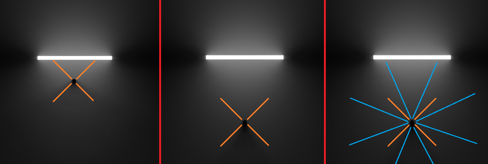
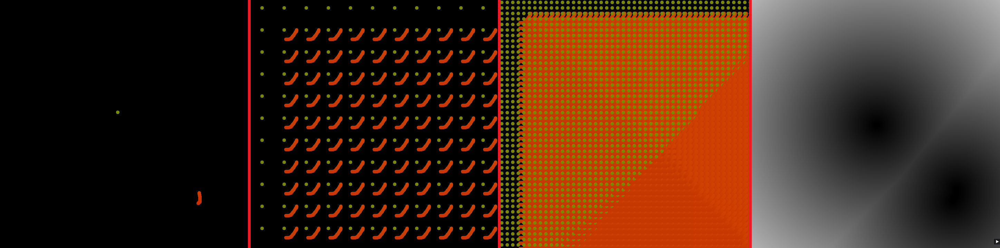

2D Radiance Cascades
Final project for the Advanced Rendering Techniques class. I implemented Radiance Cascades (RCs) and wrote a report introducing 2D Radiance Cascades, a global illumination technique that simulates penumbra effects. The report covers the fundamental principles of this technique and provides an overview of the implementation details. Additionally, it discusses issues encountered during the implementation and offers some optimizations to improve both performance and visual quality. The 2D framework was created from scrath using C++ and OpenGL.
Small introduction
Radiance cascades, introduced by Alexander Sannikov, are a memory-efficient data structure designed for real-time global illumination calculations. This structure decomposes a radiance field into multiple cascades, with each cascade storing different radiance information. The lowest cascade captures high spatial frequencies, while higher cascades focus on lower spatial frequencies and increased angular resolution. This is based on the Penumbra condition, which states that closer light sources need higher linear resolution, while distant sources require higher angular resolution.
In practice, radiance cascades store radiance values in probes across different cascades. The lowest cascade (cascade 0) has the highest spatial resolution and is denser in probes to capture fine details. Higher cascades reduce the number of probes while improving angular resolution to capture light from more distant parts of the scene.
Steps followed
To implement the demo, I followed the approach outlined by JasonToday. The process began by creating a drawing canvas where mouse positions and clicks are tracked to paint fragments. On the fragment shader, the screen space position is calculated using the UV coordinates, and if the position lies within the segment, the fragment is painted. The canvas supports loading scenes with custom screen resolutions and shapes, serving as a basic framework for drawing, as shown in Figure.
Next, I implemented optimizations for the distance field using the Jumping Flood Algorithm (JFA). The painted pixels are stamped onto a new texture, called "jfaSeed", and the algorithm propagates the distance field by iterating through multiple passes, gradually converging on the closest painted pixel. This approach uses a ping-pong technique to alternate between textures during the passes, as shown in Figure ~\ref{fig:Image3}. Once the JFA texture is generated, the distance field is computed by calculating the distance between each UV coordinate and the closest painted pixel.
Finally, to take advantage of the Penumbra hypothesis for global illumination, I implemented radiance cascades with varying spatial and angular resolutions. Each cascade has a specific probe count, with higher cascades reducing probe density but increasing angular resolution. The radiance is accumulated through ray marching, using the distance field to find the nearest surface. During the rendering, the current cascade is merged with the previous one by sampling from both cascades and averaging the results. The entire process is illustrated in Figure ~\ref{fig:Image6}, where probe data and ray-marching details are shown.

Conclusion
The implementation successfully models global illumination for a 2D scene using radiance cascades. The demo simulates light propagation and the penumbra effect. The results shown in the introductory figure demonstrate how this technique simulates lighting, and how light propagation and soft shadowing can be achieved in real-time using this technique.
Future work will involve extending this technique to a 2D arcade game using Vulkan.